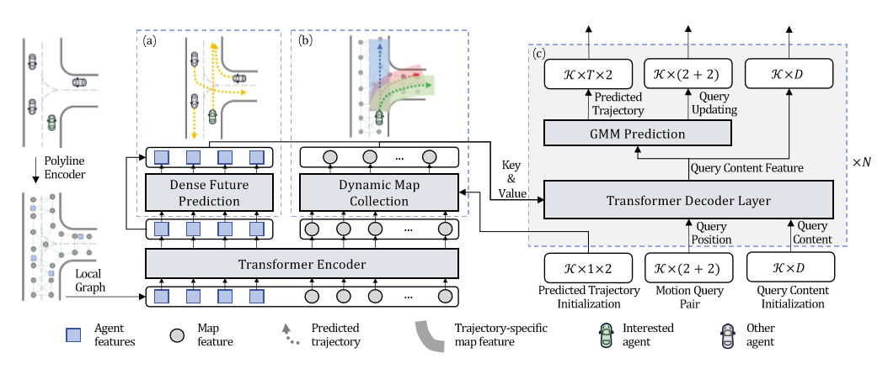
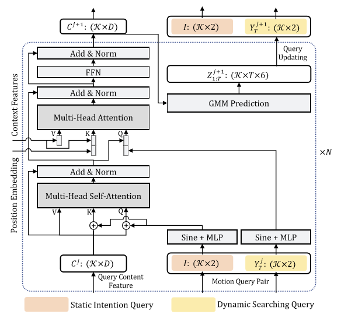
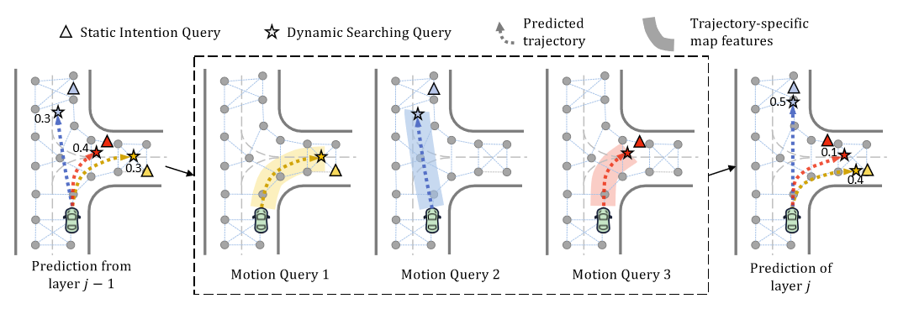
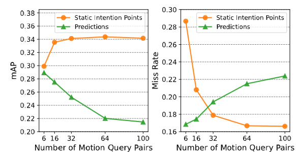
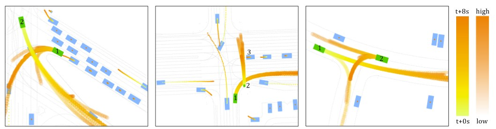
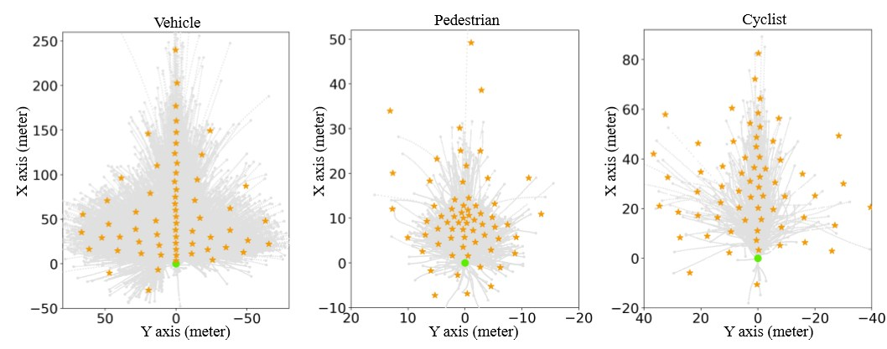
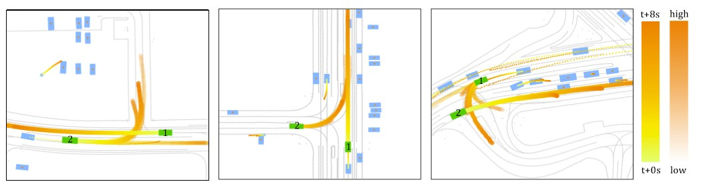
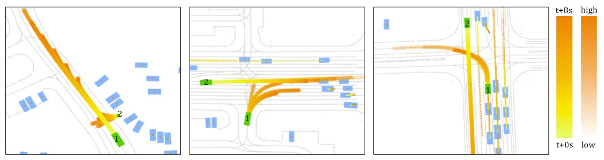
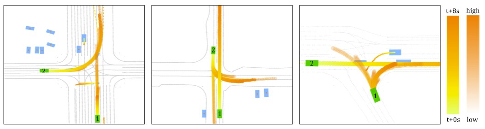

Shaoshuai Shi、Li Jiang、Dengxin Dai、Bernt Schiele
Max Planck Institute for Informatics, Saarland Informatics Campus
{sshi, lijiang, ddai, schiele}@mpi-inf.mpg.de
arXiv:2209.13508v2 [cs.CV]、2023年3月18日／第36回 Conference on Neural Information Processing Systems（NeurIPS 2022）
翻訳について：原文 PDF は
15_MTR_2209.13508.pdf（全 19 ページ）。本文、図の説明、図中ラベル、表、脚注、付録を訳出し、論文タイトルと参考文献は原文のまま掲載。図は原図を掲載し、英語ラベルの日本語訳を併記した。数式・数値・引用番号・コードの識別子は原文を維持。原文の記述に関する補足は「訳注」と明示し、本文と区別している。
交通参加者のマルチモーダルな将来の挙動を予測することは、ロボット車両が安全な意思決定を行ううえで不可欠である。既存研究は、潜在特徴に基づいて将来軌跡を直接予測するか、密なゴール候補を用いてエージェントの目的地を特定するかのいずれかを探ってきた。前者の戦略はすべての動作モードが同一の特徴から導かれるため収束が遅く、後者の戦略は性能がゴール候補の密度に大きく依存するため効率に問題がある。本論文では、動作予測を大域的な意図の位置推定（global intention localization）と局所的な動作の洗練（local movement refinement）の同時最適化としてモデル化する Motion TRansformer（MTR）フレームワークを提案する。MTR はゴール候補を用いる代わりに、少数の学習可能なモーションクエリペアを採用することで空間的な意図の事前情報を取り込む。各モーションクエリペアは特定の動作モードについての軌跡予測と洗練を担当し、これにより学習過程が安定し、より良いマルチモーダル予測が促進される。実験により、MTR は周辺（marginal）動作予測と同時（joint）動作予測の両チャレンジにおいて最先端の性能を達成し、Waymo Open Motion Dataset のリーダーボードで 1 位となったことを示す。ソースコードは https://github.com/sshaoshuai/MTR で公開している。
動作予測（motion forecasting）は、現代の自動運転システムにおける基本的なタスクである。ロボット車両が運転シーンを理解し安全な意思決定を行ううえで極めて重要であるため、近年ますます注目を集めている［21, 48, 31, 61, 37］。動作予測では、観測されたエージェントの状態と道路地図を併せて考慮し、交通参加者の将来の挙動を予測する必要がある。これは、エージェントの挙動が本質的にマルチモーダルであることと、シーン環境が複雑であることから困難である。
エージェントのあり得る将来の挙動をすべて網羅するため、既存手法は主に 2 つの系統、すなわちゴールベース手法と直接回帰手法に分かれる。ゴールベース手法［21, 65］は、エージェントのあり得る目的地をすべて網羅するために密なゴール候補を採用し、各候補が実際の目的地である確率を予測したうえで、選ばれた候補ごとに完全な軌跡を補完する。これらのゴール候補は軌跡の不確実性を減らすことでモデル最適化の負担を軽減するが、その密度がこれらの手法の性能を大きく左右する。候補が少ないと性能が低下し、候補が多いと計算量とメモリコストが大幅に増加する。直接回帰手法［37, 49］は、ゴール候補を用いる代わりに、符号化されたエージェント特徴に基づいて軌跡の集合を直接予測し、エージェントの将来の挙動を適応的に網羅する。幅広いエージェントの挙動を予測できる柔軟性がある一方で、空間的な事前情報を一切利用せずに同一のエージェント特徴から多様な動作モードを回帰する必要があるため、一般に収束が遅い。また、学習データにおいて頻出するモードがエージェント特徴の最適化を支配してしまうため、最も頻出するモードを予測しがちである。本論文では、両タイプの手法の長所を取り入れた統一的なフレームワーク、すなわち Motion TRansformer（MTR）を提示する。
提案する MTR では、少数の新しいモーションクエリペアを採用し、動作予測を 2 つのタスクの同時最適化としてモデル化する。第 1 の大域的意図位置推定タスクは、より高い効率を達成するためにエージェントの意図を大まかに特定することを目指し、第 2 の局所的動作洗練タスクは、より高い精度を達成するために各意図の予測軌跡を適応的に洗練することを目指す。本手法は、密なゴール候補に依存せずに学習過程を安定させるだけでなく、各動作モードに対する局所的な洗練を可能にすることで、柔軟かつ適応的な予測を実現する。
具体的には、各モーションクエリペアは 2 つの要素、すなわち静的意図クエリ（static intention query）と動的探索クエリ（dynamic searching query）から構成される。静的意図クエリは大域的意図位置推定のために導入され、空間的に分布する少数の意図点に基づいて定式化する。各静的意図クエリは、特定の動作モードの軌跡を生成するための意図点の学習可能な位置埋め込みである。これにより、異なるモードに対して明示的に異なるクエリを用いることで学習過程を安定させるだけでなく、各クエリに広い領域を担当させることで密なゴール候補への依存を排除する。動的探索クエリは局所的動作洗練に用いられる。これも意図点の学習可能な埋め込みとして初期化されるが、各意図点の周辺の細粒度な局所特徴を取得する役割を担う。この目的のため、動的探索クエリは予測軌跡に応じて動的に更新され、反復的な動作洗練のために変形可能な局所領域から最新の軌跡特徴を適応的に収集できる。これら 2 つのクエリは互いに補完し合い、マルチモーダルな将来の動作を予測するうえで大きな有効性を持つことが実験的に示されている。それに加えて、密な将来予測モジュールも提案する。既存研究は一般に、過去の軌跡上でのエージェント間の相互作用のモデル化に注力し、将来の軌跡同士の相互作用を無視している。この情報を補うため、各エージェントの将来軌跡と速度を密に予測する単純な補助回帰ヘッドを採用し、その予測を追加の将来コンテキスト特徴として符号化することで、注目エージェントの将来の動作予測に役立てる。実験により、この単純な補助タスクがうまく機能し、マルチモーダル動作予測の性能を著しく向上させることが示される。
本論文の貢献は 3 つである。（1）モーションクエリペアという新しい概念を備えた新規の動作デコーダネットワークを提案する。これは 2 種類のクエリを採用して、動作予測を大域的意図位置推定と局所的動作洗練の同時最適化としてモデル化する。モード固有のモーションクエリペアによって学習を安定させるだけでなく、細粒度の軌跡特徴を反復的に収集することで適応的な動作洗練を可能にする。（2）注目エージェントと他のエージェントとの将来の相互作用を可能にする補助的な密な将来予測タスクを提示する。これにより、本フレームワークは相互作用するエージェントについて、よりシーンに整合した軌跡を予測できるようになる。（3）これらの技術を採用し、マルチモーダル動作予測のために Transformer のエンコーダ・デコーダ構造を探求する MTR フレームワークを提案する。本手法は Waymo Open Motion Dataset（WOMD）［15］の周辺動作予測と同時動作予測の両ベンチマークにおいて最先端の性能を達成し、アンサンブルを用いない従来の最良手法を、周辺動作予測で mAP +8.48%、同時動作予測で mAP +7.98% 上回った。2022 年 5 月 19 日時点で、本手法は WOMD の周辺・同時動作予測の両リーダーボードで 1 位となった。さらに、MTR のアンサンブル版を増やした本手法は、Waymo Open Dataset Challenge 2022 の Motion Prediction Challenge でも優勝した［56, 44］。
自動運転のための動作予測。近年、自動運転への関心の高まりから動作予測は広く研究されており、典型的には道路地図とエージェントの過去の状態を入力とする。このようなシーンコンテキストを符号化するため、初期の研究［38, 33, 6, 13, 64, 4, 9］は典型的にそれらを画像にラスタライズし、畳み込みニューラルネットワーク（CNN）で処理する。LaneGCN［29］は地図のトポロジーを捉えるためにレーングラフを構築する（訳注：原文は "builds a lane graph toscalability capture map topology" と語順が崩れており、"to capture map topology" の意と解して訳した）。VectorNet［17］は、その効率性とスケーラビリティから近年の研究［21, 45, 37, 49］で広く採用されており、道路地図とエージェント軌跡の両方をポリラインとして表現する。本研究もこのベクトル表現を採用するが、ポリラインの大域グラフを構築する代わりに、局所的に連結されたグラフ上で Transformer エンコーダを用いることを提案する。これは入力の局所構造をよりよく保持するだけでなく、メモリ効率も高く、長期の動作予測のためにより広い地図の符号化を可能にする。
符号化されたシーンコンテキスト特徴が与えられたとき、既存研究はマルチモーダルな将来の動作をモデル化するためのさまざまな戦略を探ってきた。初期の研究［2, 22, 41, 46, 42］は、出力分布を近似するために軌跡サンプルの集合を生成することを提案した。他の研究［10, 23, 35, 39, 43］は、コンパクトな分布を生成するためにマルチモーダルな予測を混合ガウスモデル（GMM）でパラメータ化した。HOME シリーズ［19, 18］は予測したヒートマップ上でのサンプリングによって軌跡を生成する。IntentNet［8］は意図の予測を 8 つの高レベル行動の分類として扱い、［31］は領域ベースの学習戦略を提案した。ゴールベース手法［65, 42, 16, 32］は別種のモデルであり、まずエージェントのいくつかのゴール点を推定し、次に各ゴールについて完全な軌跡を補完する。

図1：MTR フレームワークのアーキテクチャ。（a）は密な将来予測モジュールを示し、各エージェントについて単一の軌跡を予測する（例えば（a）の上部に黄色の破線曲線として描かれているもの）。（b）は動的地図収集モジュールを示し、予測された各軌跡に沿って地図要素を収集し（例えば（b）の上部に各軌跡に沿った影付き領域として描かれているもの）、動作デコーダネットワークに軌跡固有の特徴を提供する。（c）は動作デコーダネットワークを示し、\(\mathcal{K}\) はモーションクエリペアの数、\(T\) は将来フレーム数、\(D\) は隠れ特徴の次元数、\(N\) は Transformer デコーダ層の数である。予測軌跡、モーションクエリペア、クエリ内容特徴は直前のデコーダ層の出力であり、次のデコーダ層の入力として用いられる。最初のデコーダ層では、モーションクエリペアの 2 つの要素はいずれも事前定義された意図点として初期化され、初期の地図収集では予測軌跡の代わりに意図点が用いられ、クエリ内容特徴はゼロで初期化される。
図中ラベル：Polyline Encoder＝ポリラインエンコーダ、Local Graph＝局所グラフ、Dense Future Prediction＝密な将来予測、Dynamic Map Collection＝動的地図収集、Transformer Encoder＝Transformer エンコーダ、Key & Value＝キーとバリュー、Transformer Decoder Layer＝Transformer デコーダ層、GMM Prediction＝GMM 予測、Predicted Trajectory＝予測軌跡、Query Updating＝クエリ更新、Query Content Feature＝クエリ内容特徴、Query Position＝クエリ位置、Query Content＝クエリ内容、Predicted Trajectory Initialization＝予測軌跡の初期化、Motion Query Pair＝モーションクエリペア、Query Content Initialization＝クエリ内容の初期化、Agent features＝エージェント特徴、Map feature＝地図特徴、Predicted trajectory＝予測軌跡、Trajectory-specific map feature＝軌跡固有の地図特徴、Interested agent＝注目エージェント、Other agent＝他のエージェント
近年、長期の動作予測のための大規模な Waymo Open Motion Dataset（WOMD）［15］が提案された。この課題に取り組むため、DenseTNT［21］はゴールベース戦略を採用し、密なゴール点から軌跡の終点を分類する。他の研究は、符号化されたエージェント特徴［37］や潜在アンカー埋め込み［49］に基づいて将来軌跡を直接予測する。しかし、ゴールベース戦略は多数のゴール候補のため効率に懸念があり、直接回帰戦略はさまざまな動作モードの予測が同一のエージェント特徴から回帰されるため収束が遅い。これに対して本手法は少数の学習可能なモーションクエリペアを採用し、多数のゴール候補を不要にするだけでなく、異なる動作モードの予測にモード固有のモーションクエリペアを用いることで最適化の負担を軽減する。
ごく最近のいくつかの研究［47, 25, 24］も、Mix-and-Match ブロック［47］、MultiPath++ の変種［25］、異種グラフ［24］を探求することで WOMD において最高水準の性能を達成している。しかし、これらは一般にシーンコンテキストを符号化するさまざまな構造の探求に注力しており、マルチモーダル動作予測のためのより良い動作デコーダをいかに設計するかは依然として十分に探求されていない。これに対して本手法は、新しい Transformer ベースの動作デコーダネットワークによってこの課題に取り組むことに焦点を当てる。
Transformer。Transformer［50］は自然言語処理［12, 3］やコンピュータビジョン［14, 52, 5, 51, 62］に広く応用されている。本手法は DETR［5］とその後続研究［67, 34, 60, 27, 30, 11, 63］、特に物体クエリを空間的なアンカーボックスの位置埋め込みとみなす DAB-DETR［30］に着想を得ている。物体検出におけるそれらの大きな成功に動機づけられ、事前の意図点を用いてマルチモーダル動作予測をモデル化するモーションクエリペアという新しい概念を導入する。各モーションクエリペアは特定の動作モードの予測を担当し、Transformer デコーダと組み合わせることで反復的な動作洗練も可能にする。
マルチモーダルな将来の動作を予測するため、反復的な動作洗練を備えた新しい Transformer エンコーダ・デコーダ構造を採用する Motion TRansformer（MTR）を提案する。全体構造を図1に示す。3.1 節ではシーンコンテキストをモデル化するためのエンコーダネットワークを紹介する。3.2 節では、マルチモーダルな軌跡を予測するための、モーションクエリペアという新しい概念を備えた動作デコーダネットワークを提示する。最後に 3.3 節で、本フレームワークの最適化過程を紹介する。
エージェントの将来の挙動は、エージェント間の相互作用と道路地図に大きく依存する。このようなシーンコンテキストを符号化するため、既存手法は大域的な相互作用グラフの構築［17, 21］や、地図特徴をエージェントごとの特徴に集約すること［37, 49］など、さまざまな戦略を探ってきた。我々は、シーンコンテキストの符号化、特に道路地図の符号化において局所構造が重要であると主張する。そこで、このような構造情報をよりよく保持するために、局所的自己注意を備えた Transformer エンコーダネットワークを提案する。
入力表現。ベクトル化表現［17］に従い、入力軌跡と道路地図の両方をポリラインとして構成する。注目エージェントの動作予測では、すべての入力をこのエージェントを中心とする座標系に正規化するエージェント中心の戦略［65, 21, 49］を採用する。次に、単純なポリラインエンコーダを用いて、各ポリラインを Transformer エンコーダの入力トークン特徴として符号化する。具体的には、\(N_a\) 体のエージェントの過去の状態を \(A_{\text{in}} \in \mathbb{R}^{N_a \times t \times C_a}\) と表す。ここで \(t\) は過去フレーム数、\(C_a\) は状態情報の数（例えば位置、方位角、速度）であり、\(t\) フレームに満たない軌跡については欠損フレームの位置をゼロで埋める。道路地図を \(M_{\text{in}} \in \mathbb{R}^{N_m \times n \times C_m}\) と表す。ここで \(N_m\) は地図ポリラインの数、\(n\) は各ポリラインの点数、\(C_m\) は各点の属性数（例えば位置と道路種別）である。これらはいずれも PointNet 風［40］のポリラインエンコーダにより次のように符号化される。
\[ A_{\text{p}} = \phi\left(\text{MLP}(A_{\text{in}})\right), \quad M_{\text{p}} = \phi\left(\text{MLP}(M_{\text{in}})\right), \tag{1} \]
ここで \(\text{MLP}(\cdot)\) は多層パーセプトロンネットワーク、\(\phi\) は最大値プーリングであり、各ポリラインの特徴を特徴次元 \(D\) のエージェント特徴 \(A_{\text{p}} \in \mathbb{R}^{N_a \times D}\) と地図特徴 \(M_{\text{p}} \in \mathbb{R}^{N_m \times D}\) に集約する。
局所 Transformer エンコーダによるシーンコンテキストの符号化。シーンコンテキストの局所構造は動作予測にとって重要である。例えば、2 本の平行な車線の関係は車線変更の動作をモデル化するうえで重要であるが、大域的に連結されたグラフ上で注意機構を用いると、すべての車線の関係を等しく考慮してしまう。これに対して本手法は、局所的な注意機構を採用することでこのような事前知識をコンテキストエンコーダに導入する。これにより局所構造がよりよく保持され、メモリ効率も高くなる。具体的には、\(j\) 番目の Transformer エンコーダ層の注意モジュールは次のように定式化できる。
\[ G^j = \text{MultiHeadAttn}\left(\text{query=}G^{j-1} + \text{PE}_{G^{j-1}},\ \text{key=}\kappa(G^{j-1}) + \text{PE}_{\kappa(G^{j-1})},\ \text{value=}\kappa(G^{j-1})\right), \tag{2} \]
ここで \(\text{MultiHeadAttn}(\cdot,\cdot,\cdot)\) はマルチヘッド注意層［50］、\(G^0 = [A_{\text{p}}, M_{\text{p}}] \in \mathbb{R}^{(N_a+N_m)\times D}\) はエージェントと地図の特徴を連結したもの、\(\kappa(\cdot)\) は各クエリポリラインについて最も近い \(k\) 本のポリラインを求める \(k\) 近傍法を表す。PE は入力トークンの正弦波位置符号化を表し、各エージェントについては最新の位置を、各地図ポリラインについてはポリラインの中心を用いる。このような局所的自己注意のおかげで、本フレームワークははるかに広い範囲のシーンコンテキストを符号化できる。
エンコーダネットワークは最終的に、エージェント特徴 \(A_{\text{past}} \in \mathbb{R}^{N_a \times D}\) と地図特徴 \(M \in \mathbb{R}^{N_m \times D}\) の両方を生成し、これらを後続のデコーダネットワークのシーンコンテキスト入力とする。
将来の相互作用のための密な将来予測。他のエージェントとの相互作用は注目エージェントの挙動に大きく影響する。従来研究は、ハブ・ホスト型ネットワーク［68］、動的関係推論［28］、社会的時空間ネットワーク［59］などによって複数エージェントの相互作用をモデル化することを提案している。しかし、既存研究の多くは一般に過去の軌跡上でのこのような相互作用の学習に注力し、将来の軌跡同士の相互作用を無視している。そこで、符号化された特徴 \(A\) がすでにすべてのエージェントの豊富なコンテキスト情報を学習していることを考慮し、\(A\) 上に単純な回帰ヘッドを採用して、すべてのエージェントの将来軌跡と速度の両方を密に予測することを提案する。
\[ S_{1:T} = \text{MLP}(A_{\text{past}}), \tag{3} \]
ここで \(S_i \in \mathbb{R}^{N_a \times 4}\) は時刻ステップ \(i\) における各エージェントの将来の位置と速度を含み、\(T\) は予測すべき将来フレーム数である。予測軌跡 \(S_{1:T}\) は式（1）と同じポリラインエンコーダを用いて符号化され、エージェントの将来の状態が特徴 \(A_{\text{future}} \in \mathbb{R}^{N_a \times D}\) として表される。これは特徴の連結と 3 層の MLP により \(A = \text{MLP}([A_{\text{past}}, A_{\text{future}}])\) として上記の特徴 \(A\) を強化するのに用いられる。この補助タスクはデコーダネットワークに追加の将来コンテキスト情報を提供し、モデルが注目エージェントについてよりシーンに整合した将来軌跡を予測するのを促す。表3の実験は、この単純かつ軽量な補助タスクがマルチモーダル動作予測の性能を効果的に向上させることを示している。
シーンコンテキスト特徴が与えられると、マルチモーダル動作予測のために Transformer ベースの動作デコーダネットワークを採用する。ここで我々は、動作予測を大域的意図位置推定と局所的動作洗練の同時最適化としてモデル化するためのモーションクエリペアを提案する。各モーションクエリペアは 2 種類のクエリ、すなわち静的意図クエリと動的探索クエリを含み、それぞれ大域的意図位置推定と局所的動作洗練を行う。図2に示すように、本動作デコーダネットワークは、モーションクエリペアを用いて予測軌跡を反復的に洗練するために、積み重ねた Transformer デコーダ層を含む。以下では詳細な構造を説明する。
大域的意図位置推定は、エージェントの潜在的な動作意図を効率的かつ効果的に位置推定することを目的とする。我々は、異なる動作モードに対して異なる意図クエリを用いることで将来軌跡の不確実性を絞り込む静的意図クエリを提案する。具体的には、正解（GT）軌跡の終点に k-means クラスタリングアルゴリズムを適用して \(\mathcal{K}\) 個の代表的な意図点 \(I \in \mathbb{R}^{\mathcal{K}\times 2}\) を生成する。各意図点は、動作の方向と速度の両方を考慮した暗黙的な動作モードを表す。各静的意図クエリを、意図点の学習可能な位置埋め込みとして次のようにモデル化する。
\[ Q_I = \text{MLP}\left(\text{PE}(I)\right), \tag{4} \]
ここで \(\text{PE}(\cdot)\) は正弦波位置符号化であり、\(Q_I \in \mathbb{R}^{\mathcal{K}\times D}\) である。特筆すべきは、各意図クエリが特定の動作モードについての軌跡予測を担当することである。これにより、各動作モードが独自の学習可能な埋め込みを持つため、学習過程が安定し、マルチモーダルな軌跡の予測が促進される。その学習可能かつ適応的な性質のおかげで、エージェントの目的地を網羅するために密に配置されたゴール候補［65, 21］を用いる代わりに、少数のクエリ（例えば本設定では 64 個のクエリ）だけで効率的な意図位置推定が可能である。

図2：モーションクエリペアを備えた本動作デコーダネットワークのネットワーク構造。
図中ラベル：Context Features＝コンテキスト特徴、Position Embedding＝位置埋め込み、Multi-Head Attention＝マルチヘッド注意、Multi-Head Self-Attention＝マルチヘッド自己注意、Add & Norm＝加算と正規化、GMM Prediction＝GMM 予測、Query Updating＝クエリ更新、Query Content Feature＝クエリ内容特徴、Motion Query Pair＝モーションクエリペア、Sine + MLP＝正弦波符号化＋MLP、Static Intention Query＝静的意図クエリ、Dynamic Searching Query＝動的探索クエリ
局所的動作洗練は、軌跡を洗練するための細粒度の軌跡特徴を反復的に収集することで、大域的意図位置推定を補完することを目的とする。我々は、各動作モードについて軌跡特徴を適応的に探る動的探索クエリを提案する。各動的探索クエリもまた空間上の点の位置埋め込みであり、対応する意図点で初期化されるが、各デコーダ層で予測軌跡に応じて動的に更新される。具体的には、\(j\) 番目のデコーダ層における予測将来軌跡 \(Y^j_{1:T} = \{Y^j_i \in \mathbb{R}^{\mathcal{K}\times 2} \mid i = 1, \cdots, T\}\) が与えられたとき、\((j+1)\) 番目のデコーダ層の動的探索クエリは次のように更新される。
\[ Q^{j+1}_S = \text{MLP}\left(\text{PE}(Y^j_T)\right). \tag{5} \]
図3に示すように、各モーションクエリペアについて、軌跡に沿った局所領域から地図特徴を問い合わせることで細粒度の軌跡特徴を抽出する動的地図収集モジュールを提案する。これは、中心が予測軌跡に最も近い \(L\) 本のポリラインを収集することで実装される。エージェントの挙動は道路地図に大きく依存するため、この局所的動作洗練戦略により、反復的な動作洗練のために最新の局所コンテキスト情報に継続的に注目できる。
モーションクエリペアを用いた注意モジュール。各デコーダ層において、静的意図クエリは異なる動作意図間で情報を伝播するために用いられ、動的探索クエリはシーンコンテキスト特徴から軌跡固有の特徴を集約するために用いられる。具体的には、静的意図クエリを自己注意モジュールの位置埋め込みとして次のように用いる。
\[ C^j_{\text{sa}} = \text{MultiHeadAttn}(\text{query=}C^{j-1} + Q_I,\ \text{key=}C^{j-1} + Q_I,\ \text{value=}C^{j-1}), \tag{6} \]
ここで \(C^{j-1} \in \mathbb{R}^{\mathcal{K}\times D}\) は \((j-1)\) 番目のデコーダ層からのクエリ内容特徴であり、\(C^0\) はゼロで初期化される。\(C^j_{\text{sa}} \in \mathbb{R}^{\mathcal{K}\times D}\) は更新されたクエリ内容である。次に、動的探索クエリをクロス注意のクエリ位置埋め込みとして用い、エンコーダの出力から軌跡固有の特徴を探る。［34, 30］に着想を得て、クエリとキーの両方について内容特徴と位置埋め込みを連結し、注意重みに対するそれぞれの寄与を分離する。エージェント特徴 \(A\) と地図特徴 \(M\) の両方から特徴を集約するため、2 つのクロス注意モジュールを別々に用いる。

図3：反復的な動作洗練のための動的地図収集モジュールの説明図。
図中ラベル：Static Intention Query＝静的意図クエリ、Dynamic Searching Query＝動的探索クエリ、Predicted trajectory＝予測軌跡、Trajectory-specific map features＝軌跡固有の地図特徴、Prediction from layer \(j-1\)＝第 \(j-1\) 層からの予測、Motion Query 1／2／3＝モーションクエリ 1／2／3、Prediction of layer \(j\)＝第 \(j\) 層の予測
\[ \begin{aligned} C^j_A &= \text{MultiHeadAttn}(\text{query=}[C^j_{\text{sa}}, Q^j_S],\ \text{key=}[A, \text{PE}_A],\ \text{value=}A), \\ C^j_M &= \text{MultiHeadAttn}(\text{query=}[C^j_{\text{sa}}, Q^j_S],\ \text{key=}[\alpha(M), \text{PE}_{\alpha(M)}],\ \text{value=}\alpha(M)), \\ C^j &= \text{MLP}([C^j_A, C^j_M]) \end{aligned} \tag{7} \]
ここで \([\cdot,\cdot]\) は特徴の連結を表し、\(\alpha(M)\) は動作洗練のために軌跡に沿った \(L\) 個の地図特徴を収集する前述の動的地図収集モジュールである。なお簡単のため、式（6）と（7）では Transformer 層［50］における残差接続とフィードフォワードネットワークを省略している。最終的に、\(C^j \in \mathbb{R}^{\mathcal{K}\times D}\) は \(j\) 番目の層における各モーションクエリペアの更新されたクエリ内容特徴である。
混合ガウスモデルによるマルチモーダル動作予測。各デコーダ層について、将来軌跡を生成するための予測ヘッドを \(C^j\) に付加する。エージェントの挙動は高度にマルチモーダルであるため、［10, 49］に従い、各時刻ステップにおける予測軌跡の分布を混合ガウスモデル（GMM）で表現する。具体的には、各将来時刻ステップ \(i \in \{1, \cdots, T\}\) について、各ガウス成分の確率 \(p\) とパラメータ \((\mu_x, \mu_y, \sigma_x, \sigma_y, \rho)\) を次のように予測する。
\[ Z^j_{1:T} = \text{MLP}(C^j), \tag{8} \]
ここで \(Z^j_i \in \mathbb{R}^{\mathcal{K}\times 6}\) は、確率分布 \(p_{1:\mathcal{K}}\) を持つ \(\mathcal{K}\) 個のガウス成分 \(\mathcal{N}_{1:\mathcal{K}}(\mu_x, \sigma_x; \mu_y, \sigma_y; \rho)\) を含む。時刻ステップ \(i\) におけるエージェントの位置の予測分布は次のように定式化できる。
\[ P^j_i(o) = \sum_{k=1}^{\mathcal{K}} p_k \cdot \mathcal{N}_k(o_x - \mu_x, \sigma_x; o_y - \mu_y, \sigma_y; \rho). \tag{9} \]
ここで \(P^j_i(o)\) は空間位置 \(o \in \mathbb{R}^2\) におけるエージェントの存在確率である。予測軌跡 \(Y^j_{1:T}\) は、予測されたガウス成分の中心を取り出すだけで生成できる。
本モデルは 2 つの学習損失によりエンドツーエンドで学習される。1 つ目の補助損失は、式（3）の出力を最適化するための \(L1\) 回帰損失である。2 つ目のガウス回帰損失には、正解軌跡の尤度を最大化するため、式（9）に基づく負の対数尤度損失を採用する。［10, 49］に着想を得て、最も近いモーションクエリペアを 1 つ選んで正例のガウス成分として最適化するハード割り当て戦略を採用する。この選択は、各意図点と GT 軌跡の終点との距離を計算することで実装される。ガウス回帰損失は各デコーダ層で用いられ、最終的な損失は補助回帰損失とすべてのガウス回帰損失を等しい重みで足し合わせたものである。損失の詳細は付録を参照されたい。
データセットと評価指標。本手法を大規模な Waymo Open Motion Dataset（WOMD）［15］で評価する。WOMD は実世界の交通シーンから興味深い相互作用を抽出したデータセットであり、現在最も多様な相互作用動作データセットである。WOMD には別々の評価指標を持つ 2 つのタスクがある。（1）各エージェント（1 シーンあたり最大 8 エージェント）の予測動作を独立に評価する周辺動作予測チャレンジ。（2）評価のために、相互作用する 2 エージェントの同時の将来位置を予測する必要がある同時動作予測チャレンジ。いずれも 1 秒間の過去データを提供し、8 秒先までのエージェントの周辺または同時の軌跡を 6 本予測することを目的とする。学習シーンは合計 \(487k\) あり、各チャレンジについて約 \(44k\) の検証シーンと \(44k\) のテストシーンがある。評価指標の計算には公式の評価ツールを用い、公式リーダーボード［55, 54］と同様に mAP とミス率（miss rate）が最も重要な指標である。
| 手法 | 出典 | minADE ↓ | minFDE ↓ | Miss Rate ↓ | mAP ↑ | |
|---|---|---|---|---|---|---|
| Test | MotionCNN［26］ | CVPRw 2021 | 0.7400 | 1.4936 | 0.2091 | 0.2136 |
| ReCoAt［66］ | CVPRw 2021 | 0.7703 | 1.6668 | 0.2437 | 0.2711 | |
| DenseTNT［21］ | ICCV 2021 | 1.0387 | 1.5514 | 0.1573 | 0.3281 | |
| SceneTransformer［37］ | ICLR 2022 | 0.6117 | 1.2116 | 0.1564 | 0.2788 | |
| MTR（Ours） | - | 0.6050 | 1.2207 | 0.1351 | 0.4129 | |
| †MultiPath++［49］ | ICRA 2022 | 0.5557 | 1.1577 | 0.1340 | 0.4092 | |
| †MTR-Advanced-ens（Ours） | - | 0.5640 | 1.1344 | 0.1160 | 0.4492 | |
| Val | MTR（Ours） | - | 0.6046 | 1.2251 | 0.1366 | 0.4164 |
| MTR-e2e（Ours） | - | 0.5160 | 1.0404 | 0.1234 | 0.3245 | |
| †MTR-ens（Ours） | - | 0.5686 | 1.1534 | 0.1240 | 0.4323 | |
| †MTR-Advanced-ens（Ours） | - | 0.5597 | 1.1299 | 0.1167 | 0.4551 |
表1：Waymo Open Motion Dataset の検証セットおよびテストセットにおける周辺動作予測の性能比較。†：これらの性能はモデルアンサンブル技術によって達成されたものであるため、参考として結果を斜体で示す。WOMD の提出回数の制限のため、テストセットでは公式テストサーバへの提出によって既定設定の MTR のみを評価した。
| 手法 | 出典 | minADE ↓ | minFDE ↓ | Miss Rate ↓ | mAP ↑ | |
|---|---|---|---|---|---|---|
| Test | Waymo LSTM baseline［15］ | ICCV 2021 | 1.9056 | 5.0278 | 0.7750 | 0.0524 |
| HeatIRm4［36］ | CVPRw 2021 | 1.4197 | 3.2595 | 0.7224 | 0.0844 | |
| AIR2［58］ | CVPRw 2021 | 1.3165 | 2.7138 | 0.6230 | 0.0963 | |
| SceneTransformer［37］ | ICLR 2022 | 0.9774 | 2.1892 | 0.4942 | 0.1192 | |
| M2I［45］ | CVPR 2022 | 1.3506 | 2.8325 | 0.5538 | 0.1239 | |
| MTR（Ours） | - | 0.9181 | 2.0633 | 0.4411 | 0.2037 | |
| Val | MTR（Ours） | - | 0.9132 | 2.0536 | 0.4372 | 0.1992 |
表2：Waymo Open Motion Dataset の相互作用検証セットおよびテストセットにおける同時動作予測の性能比較。
実装の詳細。コンテキストの符号化では、6 層の Transformer エンコーダ層を積み重ねる。道路地図は複数のポリラインとして表現し、各ポリラインは最大 20 点（WOMD では約 \(10m\)）を含む。注目エージェントの周囲で最も近い \(N_m = 768\) 本の地図ポリラインを選択する。エンコーダの局所的自己注意における近傍数は 16 に設定する。エンコーダの隠れ特徴次元は \(D = 256\) とする。デコーダモジュールでは 6 層のデコーダ層を積み重ねる。動作洗練のためにコンテキストエンコーダから最も近い地図ポリラインを収集する数 \(L\) は 128 に設定する。既定では 64 個のモーションクエリペアを用い、その意図点は学習セットに k-means クラスタリングアルゴリズムを適用して生成する。評価用に 6 本の将来軌跡を生成するため、非最大値抑制（NMS）を用いて、終点間の距離を計算することにより 64 本の予測軌跡から上位 6 本の予測を選択する。距離のしきい値は \(2.5m\) とする。詳細は付録を参照されたい。
学習の詳細。本モデルは AdamW オプティマイザにより、学習率 0.0001、バッチサイズ 80 シーンでエンドツーエンドに学習する。8 基の GPU（NVDIA RTX 8000）（訳注：原文の "NVDIA" は "NVIDIA" の誤植と思われる）で 30 エポック学習し、学習率はエポック 20 から 2 エポックごとに 0.5 倍に減衰させる。重み減衰は 0.01 に設定し、データ拡張は一切用いない。
エンドツーエンド動作予測のための MTR-e2e。MTR のエンドツーエンド版である MTR-e2e も提案する。これは NMS の後処理を除去するために 6 個のモーションクエリペアのみを採用する。6 個の意図点はあり得る将来の動作をすべて十分に網羅するには疎すぎるため、学習過程において、MTR のように静的意図点を用いて目標割り当てを行う代わりに、MTR-e2e は 6 本の予測軌跡と GT 軌跡との距離を計算することで正例の混合成分を選択する。
周辺動作予測の性能比較。表1に周辺動作予測の主要な結果を示す。本 MTR はアンサンブルを用いない従来手法［21, 37］を顕著な差で上回り、mAP を +8.48% 向上させ、ミス率を 15.64% から 13.51% に低減した。特に、MTR の単一モデルの結果は、新しいモデルアンサンブル戦略によって性能を高めている最新の研究 MultiPath++［49］よりも優れた mAP を達成している。
| 大域的意図位置推定 | 反復的洗練 | 局所的動作洗練 | 密な将来予測 | minADE ↓ | minFDE ↓ | Miss Rate ↓ | mAP ↑ |
|---|---|---|---|---|---|---|---|
| Latent learnable embedding（潜在学習可能埋め込み） | × | × | × | 0.6829 | 1.4841 | 0.2128 | 0.2633 |
| Static intention query（静的意図クエリ） | × | × | × | 0.7036 | 1.4651 | 0.1845 | 0.3059 |
| Static intention query | ✓ | × | × | 0.6919 | 1.4217 | 0.1776 | 0.3171 |
| Static intention query | ✓ | ✓ | × | 0.6833 | 1.4059 | 0.1756 | 0.3234 |
| Static intention query | ✓ | × | ✓ | 0.6735 | 1.3847 | 0.1706 | 0.3284 |
| Static intention query | ✓ | ✓ | ✓ | 0.6697 | 1.3712 | 0.1668 | 0.3437 |
表3：MTR フレームワークにおける各構成要素の効果。すべてのモデルは同じエンコーダネットワークを共有する。「latent learnable embedding（潜在学習可能埋め込み）」はデコーダネットワークのクエリとして 6 個の潜在的な学習可能埋め込みを用いることを示し、「iterative refinement（反復的洗練）」は動作洗練のために 6 層のデコーダを積み重ねて用いることを示す。
表1は MTR の変種の比較も示している。MTR-e2e は NMS の後処理を除去することで minADE と minFDE が優れている一方、MTR は各モーションクエリペアの明示的な意味を学習してより確信度の高い意図予測を生成するため、mAP が優れている。さらに、MTR と MTR-e2e の予測を統合し、NMS で冗長な予測を除去する単純なモデルアンサンブル戦略（MTR-ens と表記）も提案する。これは両モデルの長所を取り入れ、はるかに優れた mAP を達成する。このアンサンブル戦略を本フレームワークの 7 つの変種（例えばデコーダ層を増やしたもの、クエリ数を変えたもの、隠れ次元を大きくしたもの）に適用することで、高度なアンサンブル結果（MTR-Advanced-ens と表記）がテストセットのリーダーボードで最高の性能を達成した。
同時動作予測の性能比較。同時動作予測について本手法を評価するため、［7, 15, 45］と同様に、相互作用する 2 エージェントの周辺予測を組み合わせて同時予測とし、これら 2 エージェントの 36 通りの組み合わせから上位 6 個の同時予測を取る。各組み合わせの確信度は周辺確率の積である。表2は、本手法がすべての指標で最先端手法［37, 45］を大きな差で上回ることを示している。特に、MTR は mAP を 12.39% から 20.37% に向上させ、ミス率を 49.42% から 44.11% に低減した。この顕著な性能向上は、シーンに整合した将来軌跡を予測するうえでの MTR の有効性を示している。それに加えて、複雑な相互作用シナリオにおける予測を示すため、いくつかの定性的結果を図5に示す。
2022 年 5 月 19 日時点で、MTR は WOMD の動作予測リーダーボードにおいて両チャレンジで 1 位となった［55, 54］。MTR のアンサンブル版を増やした本手法（すなわち MTR-Advacned-ens（訳注：原文の綴りのまま。MTR-Advanced-ens の誤植））は、Waymo Open Dataset Challenge 2022 の Motion Prediction Challenge でも優勝した［56, 44］。これらの大幅な改善は MTR フレームワークの有効性を明らかに示している。
MTR の各構成要素の有効性を調べる。アブレーション実験を効率的に行うため、WOMD の学習セットから既定の順序に従って 20% のフレーム（約 \(97k\) シーン）を一様にサンプリングした。これが学習セット全体と同様の分布を持つことを経験的に確認している。すべてのモデルは WOMD の検証セットにおいて周辺動作予測の指標で評価する。
動作デコーダネットワークの効果。大域的意図位置推定、反復的洗練、局所的動作洗練を含む、デコーダネットワークの各構成要素の有効性を調べる。表3は、公式のランキング指標 mAP の観点で、すべての構成要素が最終的な性能に顕著に寄与することを示している。特に、提案する意図点付きの静的意図クエリは、モード固有のクエリ戦略のおかげで、潜在的な学習可能埋め込みよりもはるかに優れた mAP（すなわち +4.26%）を達成する。また、反復的洗練と局所的動作洗練の戦略はいずれも、動作洗練のためにより細粒度の軌跡特徴を集約することで、mAP を 30.59% から 32.34% へと継続的に向上させる。
密な将来予測の効果。表3は、提案する密な将来予測モジュールが予測軌跡の品質を大きく向上させる（例えば mAP +1.78%）ことを示している。これは、エージェントの軌跡同士の将来の相互作用が動作予測にとって重要であり、提案戦略がそのような相互作用を学習してより信頼性の高い軌跡を予測できることを裏付けている。

図4：モーションクエリペアの数を変えた MTR フレームワーク。2 本の異なる色の線は、学習過程において正例の混合成分を選択する 2 つの異なる戦略を示す。
図中ラベル：Number of Motion Query Pairs＝モーションクエリペアの数、Miss Rate＝ミス率、Static Intention Points＝静的意図点（による選択）、Predictions＝予測（による選択）
| 注意機構 | #Polyline | minADE ↓ | minFDE ↓ | MR ↓ | mAP ↑ |
|---|---|---|---|---|---|
| Global | 256 | 0.683 | 1.4031 | 0.1717 | 0.3295 |
| Global | 512 | 0.6783 | 1.4018 | 0.1716 | 0.3280 |
| Global | 768 | OOM | OOM | OOM | OOM |
| Local | 256 | 0.6724 | 1.3835 | 0.1683 | 0.3372 |
| Local | 512 | 0.6707 | 1.3749 | 0.1670 | 0.3392 |
| Local | 768 | 0.6697 | 1.3712 | 0.1668 | 0.3437 |
| Local | 1024 | 0.6757 | 1.3782 | 0.1663 | 0.3452 |
表4：Transformer エンコーダにおける局所的自己注意の効果。「#polyline」はコンテキストの符号化に用いる入力地図ポリラインの数であり、ポリライン数が多いほど注目エージェントの周囲の地図コンテキストが広いことを示す。「OOM」はメモリ不足を示す。Global＝大域的注意、Local＝局所的注意、MR＝ミス率。

（a）V2 は高速で交差点を通過して左折しようとしている。本モデルは V1 についてマルチモーダルな挙動、すなわち左折または U ターンを予測している。いずれの場合も、V1 は V2 に道を譲ると予測されている。
（b）P2 は横断歩道を通って道路を横断しており、V1 は右折車線にいて右折しようとしている。V1 と V3 はいずれも P2 に道を譲ると予測されている。
（c）本モデルは V1 について、まだ交差点まで距離があるため、直進と右折というマルチモーダルな挙動を予測している。V1 が交差点に向かって高速で移動しているため、V2 は左折時に V1 に道を譲ると予測されている。
図5：WOMD における MTR フレームワークの定性的結果。各シーンには 2 体の注目エージェント（緑の矩形）があり、本モデルはそれぞれについて 6 本のマルチモーダルな将来軌跡を予測する。他のエージェント（青の矩形）については、密な将来予測モジュールによって単一の軌跡が予測される。異なる将来時刻ステップにおける軌跡の経由点をグラデーション色で可視化し、軌跡の確信度を透明度の違いで可視化している。略記：車両（Vehicle、V）、歩行者（Pedestrian、P）。
図中ラベル：t+0s〜t+8s＝時刻（現在から 8 秒後まで）、high／low＝確信度の高／低
コンテキスト符号化における局所的注意の効果。表4は、同じ数の地図ポリラインを入力とした場合、Transformer エンコーダにおける局所的自己注意が大域的注意よりも優れた性能を達成すること（すなわち 256 本のポリラインで mAP +0.77%、512 本のポリラインで mAP +1.12%）を示しており、入力の局所構造が動作予測にとって重要であり、局所的注意によってそのような事前知識を導入することが性能向上に役立つことを裏付けている。さらに重要なことに、局所的注意はメモリ効率が高く、地図ポリラインの数を 256 から 1,024 に増やすにつれて性能が向上し続ける。一方、大域的注意はその二次の計算量のためにメモリ不足に陥る。
異なる学習戦略におけるモーションクエリペアの数の効果。前述のとおり、学習過程において MTR と MTR-e2e は正例の混合成分を割り当てるために 2 つの異なる戦略を採用しており、MTR は静的意図点に依存し（\(\alpha\) と表記）、MTR-e2e は予測軌跡を用いる（\(\beta\) と表記）。図4はこれら 2 つの戦略の下でモーションクエリペアの数の効果を調べたものであり、次のような観察が得られた。（1）モーションクエリペアの数を増やすと、戦略 \(\alpha\) は戦略 \(\beta\) よりもはるかに優れた mAP とミス率を達成する。各意図クエリ点が特定の動作モードを担当するため、意図クエリ点はより安定した学習過程を保証できるからである。これに対して戦略 \(\beta\) は不安定な予測に依存し、正例の成分がすべての成分の間でランダムに切り替わる可能性があるため、戦略 \(\beta\) では多数のモーションクエリペアを最適化することが難しい。（2）各意図クエリ点の明示的な意味は、戦略 \(\alpha\) が一貫して戦略 \(\beta\) よりはるかに優れた mAP を達成する理由も説明している。より確信度の高いスコアで軌跡を予測でき、mAP 指標に有利に働くからである。（3）一方で、モーションクエリペアの数を減らすと、限られた数の意図クエリ点ではエージェントのあり得る動作をすべて十分に網羅できないため、戦略 \(\alpha\) のミス率は大きく増加する。逆に戦略 \(\beta\) は、そのクエリが特定の領域を担当せず、大域的にどの領域にも適応できるため、少数のモーションクエリペアでもうまく機能する。
本論文では、マルチモーダル動作予測のための新しいフレームワーク MTR を提示した。モーションクエリペアは、動作予測を大域的意図位置推定と局所的動作洗練の同時最適化としてモデル化するために定義される。大域的意図位置推定は、少数の学習可能な静的意図クエリを用いてエージェントの動作意図を効率的に捉え、局所的動作洗練は細粒度の軌跡特徴を継続的に探ることで反復的な動作洗練を行う。大規模な WOMD データセットの周辺・同時動作予測の両チャレンジにおける実験により、本手法が最先端の性能を達成することが示された。
限界。提案フレームワークは、1 体の注目エージェントについてマルチモーダルな将来軌跡を予測するエージェント中心の戦略を採用しているため、同一シーン内に複数の注目エージェントがある場合にはコンテキストの符号化が冗長になる。したがって、複数のエージェントについて同時にマルチモーダルな動作を予測できるフレームワークをいかに開発するかは重要な今後の課題の 1 つである。また、ルールベースの後処理は minADE や minFDE の指標に対して準最適な予測をもたらしうる。完全なマルチモーダル予測（例えば 64 個の予測）から必要な数の将来軌跡（例えば 6 本の軌跡）を生成するためのより良い戦略をいかに設計するかも、より頑健なフレームワークのために探求する価値がある。
参考文献は原文のまま掲載した。
アーキテクチャのさらなる詳細。3 つのカテゴリ（すなわち車両、歩行者、自転車）すべての将来の動作を予測する単一のモデルを学習し、各カテゴリはそれぞれ独自のモーションクエリペアを持つ。
入力の過去状態 \(A_{\text{in}}\) は 3 種類の情報を含む。すなわち、エージェントの過去の動作状態（すなわち位置、物体サイズ、方位角、速度）、各エージェントのワンホットのカテゴリマスク、各過去時刻ステップのワンホットの時刻埋め込みである。\(A_{\text{in}}\) 用のポリラインエンコーダは特徴次元 256 の 3 層 MLP を含む。入力地図特徴 \(M_{\text{in}}\) は 3 種類の情報を含む。すなわち、各ポリライン点の位置、各点におけるポリラインの方向、各ポリラインの種別である。\(M_{\text{in}}\) 用のポリラインエンコーダは特徴次元 64 の 5 層 MLP を含む。地図ポリラインの数はエージェント数よりはるかに多いため、こちらではより小さい特徴次元を採用している。2 つのポリラインエンコーダはいずれも、最終的にそれぞれ別の線形層によって 256 次元の特徴に射影される。
密な将来予測モジュールでは、すべてのエージェントの将来の位置と速度を予測するために、中間特徴次元 512 の 3 層 MLP を採用する。各デコーダ層の予測ヘッドには中間特徴次元 512 の 3 層 MLP を採用し、モデルの重みは異なるデコーダ層間で共有しない。
ガウス回帰損失の詳細。特定の将来時刻ステップについて予測された混合ガウスモデルが与えられたとき、その時刻ステップにおけるエージェントの正解位置 \((\hat{Y}_x, \hat{Y}_y)\) の尤度を最大化するために負の対数尤度損失を採用する。詳細な損失は次のように定式化できる。
\[ \begin{aligned} L_G &= -\log \mathcal{N}_h(\hat{Y}_x - \mu_x, \sigma_x; \hat{Y}_y - \mu_y, \sigma_y; \rho) - \log(p_h) \\ &= \log\sigma_x + \log\sigma_y + 0.5\log(1-\rho^2) + \frac{1}{2(1-\rho^2)}\left(\left(\frac{d_x}{\sigma_x}\right)^2 + \left(\frac{d_y}{\sigma_y}\right)^2 - 2\rho\frac{d_x d_y}{\sigma_x\sigma_y}\right) - \log(p_h), \end{aligned} \tag{10} \]
ここで \(d_x = \hat{Y}_x - \mu_x\)、\(d_y = \hat{Y}_y - \mu_y\) であり、\(\mathcal{N}_h(\mu_x, \sigma_x; \mu_y, \sigma_y; \rho)\) は最適化のために選択された正例のガウス成分である。\(p_h\) はこの選択された正例のガウス成分の予測確率であり、上式では選択された正例のガウス成分の確率を最大化するために交差エントロピー損失を採用している。
最終的な学習損失。上記のガウス回帰損失の定義のもとで、MTR フレームワークの最終的な学習損失は、各デコーダ層のすべてのガウス回帰損失と補助回帰損失を等しい重みで足し合わせたものである。

図6：各カテゴリにおける静的意図点の分布。緑の点はエージェントの現在位置であり、意図点はオレンジ色の星で示している。灰色の点線は各カテゴリの正解軌跡の分布を示す。なお、見やすさのため、図には正解軌跡の 10% のみを描画している。
図中ラベル：Vehicle＝車両、Pedestrian＝歩行者、Cyclist＝自転車、X axis (meter)＝X 軸（メートル）、Y axis (meter)＝Y 軸（メートル）
静的意図点の分布。本文で述べたとおり、k-means クラスタリングアルゴリズムを採用して各カテゴリについて 64 個の静的意図点を生成する。図6に示すように、生成された意図点は、将来の動作の速度と方向の両方を併せて考慮することで、ほとんどの動作意図をよく網羅できる。例えば、車両カテゴリには進行方向に一連の意図点があり、これらは実際には同じ意図方向を異なる速度でモデル化している。
推論レイテンシ。Waymo Open Motion Dataset の 1 シーンに対する MTR の平均推論レイテンシは約 \(59ms\)（バッチ 1）および \(33ms\)（バッチ 6）である。このとき本モデルは、注目エージェント（最大 8 体）それぞれについて 6 本のマルチモーダルな将来軌跡を予測し、さらに他のすべてのエージェント（最大 128 体）について単一の将来軌跡を予測する。これは標準的な PyTorch コードを用いて NVIDIA RTX 8000 上で計測した。
表5と表6に示すように、参考として、Waymo Open Motion Dataset［15］の周辺・同時動作予測の両チャレンジにおける本手法のカテゴリ別の性能を報告する。
| 設定 | カテゴリ | minADE ↓ | minFDE ↓ | Miss Rate ↓ | mAP ↑ | |
|---|---|---|---|---|---|---|
| Test | MTR | Vehicle | 0.7642 | 1.5257 | 0.1514 | 0.4494 |
| Pedestrian | 0.3486 | 0.7270 | 0.0753 | 0.4331 | ||
| Cyclist | 0.7022 | 1.4093 | 0.1786 | 0.3561 | ||
| Avg | 0.6050 | 1.2207 | 0.1351 | 0.4129 | ||
| Val | MTR | Vehicle | 0.7665 | 1.5359 | 0.1527 | 0.4534 |
| Pedestrian | 0.3456 | 0.7260 | 0.0741 | 0.4364 | ||
| Cyclist | 0.7016 | 1.4134 | 0.1830 | 0.3594 | ||
| Avg | 0.6046 | 1.2251 | 0.1366 | 0.4164 | ||
| MTR-e2e | Vehicle | 0.6087 | 1.2161 | 0.1160 | 0.3708 | |
| Pedestrian | 0.3046 | 0.6254 | 0.0696 | 0.3028 | ||
| Cyclist | 0.6346 | 1.2796 | 0.1845 | 0.2998 | ||
| Avg | 0.5160 | 1.0404 | 0.1234 | 0.3245 |
表5：Waymo Open Motion Dataset の検証セットおよびテストセットにおける周辺動作予測のクラス別性能。†：これらの性能はモデルアンサンブル技術によって達成されたものであるため、参考として結果を斜体で示す。Vehicle＝車両、Pedestrian＝歩行者、Cyclist＝自転車、Avg＝平均。（訳注：原表には † 付きの行は含まれていない）
| 設定 | カテゴリ | minADE ↓ | minFDE ↓ | Miss Rate ↓ | mAP ↑ | |
|---|---|---|---|---|---|---|
| Test | MTR | Vehicle | 0.9793 | 2.2157 | 0.3833 | 0.2977 |
| Pedestrian | 0.7098 | 1.5835 | 0.3973 | 0.2033 | ||
| Cyclist | 1.0652 | 2.3908 | 0.5428 | 0.1102 | ||
| Avg | 0.9181 | 2.0633 | 0.4411 | 0.2037 | ||
| Val | MTR | Vehicle | 0.9675 | 2.1728 | 0.3722 | 0.3018 |
| Pedestrian | 0.7097 | 1.5522 | 0.3984 | 0.1892 | ||
| Cyclist | 1.0623 | 2.4357 | 0.5410 | 0.1065 | ||
| Avg | 0.9132 | 2.0536 | 0.4372 | 0.1992 |
表6：Waymo Open Motion Dataset の検証セットおよびテストセットにおける同時動作予測のクラス別性能。
本文で紹介したとおり、エージェント間の将来の相互作用を可能にするために密な将来予測モジュールを提案した。ここでは、周囲のすべてのエージェントについての予測軌跡の精度が、注目エージェントのより良いマルチモーダル軌跡を予測するうえで重要となる。表7に示すように、本単純な密な将来予測モジュールはすべてのエージェントについて正確な将来軌跡を予測でき、8 秒間の将来動作予測において、距離しきい値 \(6.0m\) での平均ミス率は 21.11% である。このミス率は、各エージェントについて単一の予測将来軌跡で達成されたものである点に留意されたい。密な将来予測モジュールが生成する軌跡はまだデコーダネットワークの軌跡ほど正確ではないが、エージェント間の将来の相互作用を可能にすることで、すでに注目エージェントのマルチモーダル動作予測に役立っている。
| カテゴリ | ADE ↓ | FDE ↓ | Miss Rate（thresh=\(2m\)）↓ | Miss Rate（thresh=\(6m\)）↓ |
|---|---|---|---|---|
| Vehicle | 0.8755 | 3.4929 | 0.3343 | 0.1984 |
| Pedestrian | 0.4998 | 1.9685 | 0.3317 | 0.0601 |
| Cyclist | 1.6565 | 6.3868 | 0.7697 | 0.3747 |
| Avg | 1.0106 | 3.9494 | 0.4786 | 0.2111 |
表7：Waymo Open Motion Dataset の検証セットにおける密な将来予測の性能。密な将来予測モジュールは、検証セットの各エージェントについて単一の将来軌跡（8 秒先まで）を予測する。ADE は平均変位誤差（average displacement error）、FDE は最終変位誤差（final displacement error）を示す。FDE は将来 8 秒の最終時刻ステップに基づいて評価し、ミス率は異なる距離しきい値（thresh）のもとで FDE に基づいて評価する。
| 手法 | Miss Rate（\(K\)=6）↓ | Miss Rate（\(K\)=1）↓ | brier-minFDE（\(K\)=6）↓ |
|---|---|---|---|
| MTR（Ours） | 0.15 | 0.58 | 1.98 |
| TENET［53］ | 0.19 | 0.61 | 1.90 |
| OPPred | 0.19 | 0.60 | 1.92 |
| Qml | 0.19 | 0.62 | 1.95 |
| GANet | 0.17 | 0.60 | 1.97 |
| VI LaneIter | 0.19 | 0.61 | 2.00 |
| QCNet | 0.21 | 0.60 | 2.14 |
| THOMAS［20］ | 0.20 | 0.64 | 2.16 |
| HDGT［24］ | 0.21 | 0.66 | 2.24 |
| GNA | 0.29 | 0.71 | 2.45 |
| vilab | 0.29 | 0.71 | 2.47 |
表8：Argoverse2 データセットのテストセットリーダーボードにおける上位 10 件の提出との性能比較。\(K\) は評価指標の計算に用いる予測軌跡の数である。
Argoverse 2 Motion Forecasting Dataset［57］は動作予測のためのもう 1 つの大規模データセットであり、学習と検証用に 250,000 のシナリオを含む。モデルは各シナリオの過去 5 秒間を入力とし、1 体の注目エージェントについて 6 秒間の将来軌跡を予測する必要がある。地図コンテキスト情報を提供する HDMap は常に利用可能である。このデータセットで本モデルを学習するにあたり、モデルが 5 秒間の過去軌跡を入力とし 6 秒間の将来軌跡を予測する必要がある点を除いて、Waymo データセットと同じハイパーパラメータを採用する。
本手法を Argoverse2 データセットのリーダーボード上位 10 件の提出［1］と比較する。これらの提出の多くは Argoverse2 Motion Forcasting Competition 2022（訳注：原文の綴りのまま。"Forecasting" の誤植）向けに調整されており、非常に競争力が高い。表8に示すように、本 MTR フレームワークはミス率関連の指標で顕著な向上を伴って新たな最先端の性能を達成しており、本手法の高い汎化性と頑健性を示している。
| #neighbors | minADE ↓ | minFDE ↓ | MR ↓ | mAP ↑ |
|---|---|---|---|---|
| 4 | 0.6677 | 1.3724 | 0.1672 | 0.3405 |
| 8 | 0.6681 | 1.3673 | 0.1670 | 0.3428 |
| 16 | 0.6697 | 1.3712 | 0.1668 | 0.3437 |
| 32 | 0.6701 | 1.3763 | 0.1678 | 0.3416 |
| 64 | 0.6727 | 1.3756 | 0.1687 | 0.3367 |
表9：Transformer エンコーダの局所的自己注意における近傍数（#neighbors）の効果。
| #Polyline | minADE ↓ | minFDE ↓ | MR ↓ | mAP ↑ |
|---|---|---|---|---|
| 32 | 0.6735 | 1.3847 | 0.1701 | 0.3317 |
| 64 | 0.6699 | 1.3650 | 0.1672 | 0.3386 |
| 128 | 0.6697 | 1.3712 | 0.1668 | 0.3437 |
| 256 | 0.6704 | 1.3729 | 0.1665 | 0.3396 |
表10：動的地図収集における地図ポリライン数の効果。
局所的自己注意における近傍数の効果。表9に示すように、局所的自己注意で 4 近傍を用いるだけで mAP の観点からすでに良好な性能が得られ、近傍数を 4 から 16 に増やすと mAP 指標は向上し続ける。しかし、局所的自己注意を行う近傍数を 64 に増やすと、性能はわずかに低下する（すなわち 34.37% から 33.67% へ）。これは、少数の近傍のほうが入力要素の局所構造をよりよく保持でき、より良い性能を達成するための最適化も容易であること、そして少数の近傍は自己注意を行ううえで多数の近傍よりも計算効率とメモリ効率がはるかに高いことを示している。
動的地図収集におけるポリライン数の効果。表10は、収集する地図ポリラインの数を 32 から 128 に増やすと、より広い受容野で軌跡固有の地図特徴を取得することにより mAP 指標が一貫して向上することを示している。しかし、軌跡の洗練のために 256 本の地図ポリラインを収集すると性能はわずかに低下する（mAP -0.41%）。これは、収集する地図ポリラインが多すぎるとノイズが増え、洗練のための正確な軌跡固有の地図特徴を提供できなくなる可能性があることを示している。
| #decoders | minADE ↓ | minFDE ↓ | MR ↓ | mAP ↑ |
|---|---|---|---|---|
| 3 | 0.6717 | 1.3796 | 0.1686 | 0.3360 |
| 6 | 0.6697 | 1.3712 | 0.1668 | 0.3437 |
| 9 | 0.6658 | 1.3621 | 0.1661 | 0.3437 |
表11：デコーダ層数（#decoders）の効果。
| #Distribution | minADE ↓ | minFDE ↓ | MR ↓ | mAP ↑ |
|---|---|---|---|---|
| uniform grids（一様格子） | 0.7214 | 1.5563 | 0.1970 | 0.3178 |
| k-means | 0.6697 | 1.3712 | 0.1668 | 0.3437 |
表12：静的意図点の分布の効果。
デコーダ層数の効果。表11は、デコーダ層の数を増やすと性能が一貫して向上することを示しており、積み重ねた Transformer デコーダ層が、より正確な軌跡固有の特徴を継続的に集約することで予測軌跡を反復的に洗練できることを示している。既定では、MTR フレームワークの性能と効率のトレードオフを考慮して 6 層のデコーダ層を採用する。
静的意図点の分布の効果。本文で紹介したとおり、k-means アルゴリズムを採用して、モーションクエリペアの基礎となる 64 個の静的意図点を生成する。別の単純な一様サンプリング戦略でも各カテゴリについて同数の静的意図点を生成してアブレーションを行う。ここでは、各カテゴリの軌跡分布の範囲（図6参照）を考慮して \(8 \times 8 = 64\) 個の静的意図点を一様にサンプリングする。表12に示すように、静的意図点の生成に k-means アルゴリズムの代わりに一様サンプリングを用いると、性能は大きく低下する。これは、k-means ベースのアルゴリズムが静的意図点のより良い分布を生成でき、少数の静的意図点でより正確かつより網羅的な将来の動作意図を捉えられることを裏付けている。図6も、マルチモーダルな動作意図を捉えるうえでの既定の静的意図点の有効性を示している。
MTR フレームワークのさらなる定性的結果を図7に示す。
表13に示すように、本論文における表記の一覧表を提供する。

（a）V1 は高速で前進している。本モデルは V2 についてマルチモーダルな挙動、すなわち左折または直進を予測している。V2 は左折時に V1 に道を譲ると予測されている。
（b）V1 は高速で前進している。V2 は V1 に道を譲ってから左折すると予測されている。
（c）V2 は高速で前進している。V1 は左折または直進すると予測されている。V1 が左折する場合、V2 に道を譲ってから左折すると予測されている。

（d）V1 は高速で前進している。P2 は V1 が通過するのを待ってから道路を横断すると予測されている。
（e）V2 は高速で前進している。V1 は V1 に道を譲ってから右折すると予測されている（訳注：原文のまま。文脈上「V2 に道を譲って」の誤記と思われる）。
（f）V2 は高速で交差点を通過している。V1 は左折車線にいて、V2 に道を譲ってから左折すると予測されている。

（g）V2 は左折すると予測されている。V1 は高い確信度で減速し、道路を横断している 2 人の歩行者に道を譲ると予測されている。
（h）V1 は高速で前進している。V2 は左折または直進すると予測されている。V2 が左折する場合、V1 に道を譲ると予測されている。
（i）V2 は高速で交差点を通過している。V1 は左折または右折すると予測されている。いずれの場合も、V1 は V2 に道を譲ると予測されている。
図7：WOMD における MTR フレームワークの定性的結果。各シーンには 2 体の注目エージェント（緑の矩形）があり、本モデルはそれぞれについて 6 本のマルチモーダルな将来軌跡を予測する。他のエージェント（青の矩形）については、密な将来予測モジュールによって単一の軌跡が予測される。異なる将来時刻ステップにおける軌跡の経由点をグラデーション色で可視化し、軌跡の確信度を透明度の違いで可視化している。略記：車両（Vehicle、V）、歩行者（Pedestrian、P）。
図中ラベル：t+0s〜t+8s＝時刻（現在から 8 秒後まで）、high／low＝確信度の高／低
| 記号 | 意味 |
|---|---|
| \(A_{\text{in}}\) | エージェントの入力の過去動作状態 |
| \(M_{\text{in}}\) | ポリライン表現による入力地図特徴 |
| \(C_a\) | エージェントの状態の入力特徴次元 |
| \(N_a\) | エージェント数 |
| \(t\) | 与えられる過去フレーム数 |
| \(N_m\) | 地図ポリラインの数 |
| \(n\) | 各地図ポリラインの点数 |
| \(A_{\text{past}}\) | ポリラインエンコーダ後のエージェント特徴 |
| \(A_{\text{future}}\) | 全エージェントについて密に予測された軌跡を符号化した将来特徴 |
| \(A\) | Transformer エンコーダにおけるエージェント特徴 |
| \(M\) | Transformer エンコーダにおける地図特徴 |
| \(D\) | Transformer の隠れ特徴次元 |
| PE | 正弦波位置符号化の関数 |
| \(\kappa\) | k 近傍法の関数 |
| \(T\) | 予測すべき将来フレーム数 |
| \(S_i\) | 時刻ステップ \(i\) における全エージェントの予測将来位置と速度 |
| \(I\) | 静的意図点 |
| \(Q_I\) | 静的意図クエリ |
| \(Q^j_S\) | \(j\) 番目のデコーダ層における動的探索クエリ |
| \(Y^j_{1:T}\) | \(j\) 番目のデコーダ層における予測将来軌跡 |
| \(L\) | 予測軌跡に沿って収集する地図ポリラインの数 |
| \(C^{j-1}\) | \(j\) 番目のデコーダ層の入力クエリ内容特徴 |
| \(C^j_{\text{sa}}\) | \(j\) 番目のデコーダ層の自己注意後のクエリ内容特徴 |
| \(C^j_A\) | \(j\) 番目のデコーダ層のクロス注意後のクエリエージェント特徴 |
| \(C^j_M\) | \(j\) 番目のデコーダ層のクロス注意後のクエリ地図特徴 |
| \(\alpha\) | 動的地図収集の関数 |
| \(Z^j_{1:T}\) | \(j\) 番目のデコーダ層における予測 GMM パラメータ |
| \(p_k\) | GMM の \(k\) 番目の成分の予測確率 |
| \(\mathcal{N}_k\) | GMM の \(k\) 番目の成分の関数 |
| \(\mathcal{K}\) | 各 GMM の成分数 |
| \(P^j_i(o)\) | 空間位置 \(o\)、時刻ステップ \(i\) におけるエージェントの予測存在確率 |
表13：本論文における表記の一覧表。